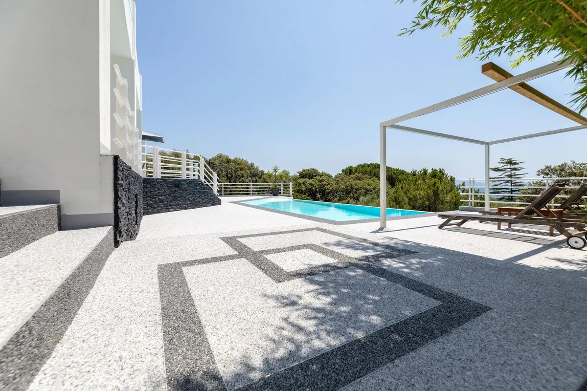

El borde de la piscina es la zona más peligrosa de cualquier casa: agua, pies descalzos y prisas. Un mal suelo convierte cada salida del agua en un riesgo de resbalón, sobre todo para niños y personas mayores. En este artículo repasamos qué suelos funcionan mejor, qué dice la normativa y qué conviene en el clima de Canarias.
Qué debe tener un buen suelo para el borde de la piscina
- Agarre con los pies mojados: es lo más importante. El suelo debe tener textura suficiente para no resbalar descalzo.
- Que no se encharque: si el agua se queda en la superficie forma una lámina que resbala, por bueno que sea el material.
- Que no queme: en Canarias el sol aprieta casi todo el año; los tonos claros se calientan mucho menos.
- Resistencia al cloro, a la sal, a los rayos UV y a las cremas solares.
- Pocas juntas: las juntas acumulan suciedad, se ennegrecen y pueden levantarse.
Qué dice la normativa
El Código Técnico de la Edificación (CTE DB SUA 1) clasifica los suelos según su resbaladicidad en clases 1, 2 y 3, y exige la clase 3 —la más exigente— en zonas de piscinas y duchas de edificios de uso público, como hoteles, comunidades o instalaciones deportivas. En una vivienda no es obligatorio, pero es la mejor referencia para elegir.
Para zonas de pies descalzos también se usan clasificaciones específicas (por ejemplo, las clases A, B y C de la norma alemana DIN 51097, donde la C es la recomendada para bordes de piscina, o la clasificación PN18 en Francia).
Opciones de suelo para el borde de la piscina
| Suelo | Agarre mojado | Charcos | Juntas | A tener en cuenta |
|---|---|---|---|---|
| Gres porcelánico antideslizante | Bueno si es clase 3 | Sí, si no hay pendiente | Muchas | Fácil de encontrar; elegir siempre clase 3 / exterior |
| Piedra natural (abujardada, flameada) | Bueno | Según pendiente | Sí | Bonita, pero puede calentarse y manchar |
| Madera o composite | Medio | Drena entre lamas | Lamas | Mantenimiento; la madera se agrisa y se astilla |
| Hormigón impreso | Medio | Sí | Pocas | Económico; pierde color y resbala si se pule |
| Césped artificial | Bueno | Drena | No | Muy agradable; ideal en zonas de tumbonas |
| Moqueta de piedra drenante (Résineo) | Muy bueno (PN18) | No: el agua pasa a través | No | Se aplica sobre el suelo actual; tonos claros para el sol |
La opción que más recomendamos: suelo drenante de piedra natural
La moqueta de piedra es un pavimento continuo formado en un 95-97 % por granos de mármol o cuarzo unidos con resina de poliuretano transparente. Entre grano y grano quedan poros por los que el agua pasa hacia abajo —de 30 a 50 litros por segundo y metro cuadrado—, así que no se forma lámina de agua y el pie agarra incluso recién salido de la piscina.
Somos distribuidor oficial de Résineo para Canarias. Además de su agarre (clasificación PN18 para zonas de pies descalzos), tiene dos ventajas prácticas:
- Sin obra: en la mayoría de los casos se aplica sobre la baldosa existente, con unos 10 mm de espesor.
- Sin juntas: no hay rejuntado que se ennegrezca ni piezas que se levanten.

Consejo para Canarias: elige tonos claros (perla, arena, blanco) para el borde y deja los oscuros para cenefas o detalles. Y asegúrate de que el suelo tenga una ligera pendiente (1-2 %) hacia un desagüe.
¿Y el césped artificial junto a la piscina?
Es una opción excelente para la zona de tumbonas y el jardín que rodea la piscina: drena, no resbala y es muy agradable al tacto. Lo contamos en césped artificial para piscinas y puedes verlo en nuestro caso de éxito en Carrizal.
¿Quieres renovar el borde de tu piscina?
Te asesoramos sobre la mejor opción para tu caso y te enseñamos muestras reales. Más información en suelo Résineo en Canarias o en la web de Résineo Canarias. ¿Prefieres una piscina entera con efecto playa? Mira la comparativa piscina de arena vs gresite.
Preguntas frecuentes
¿Qué suelo resbala menos en el borde de una piscina?
Los suelos con textura y que dejan pasar el agua, como la moqueta de piedra drenante, y los pavimentos con clase de resbaladicidad alta para pies descalzos. Lo importante es que no se forme una lámina de agua en la superficie.
¿Qué clase de resbaladicidad exige la normativa para piscinas?
El Código Técnico de la Edificación (CTE DB SUA 1) exige clase 3, la más alta, en las zonas de piscina y duchas de edificios de uso público. En viviendas no es obligatorio, pero es la referencia recomendable.
¿Qué suelo de piscina quema menos al sol?
Los de color claro. Cualquier pavimento oscuro expuesto al sol de Canarias se calienta mucho más, sea piedra, cerámica o resina.
¿Se puede poner un suelo antideslizante sin levantar el actual?
Sí, en muchos casos. Un pavimento como Résineo se aplica sobre la baldosa existente si está bien adherida, con unos 10 mm de espesor, sin obra de demolición.